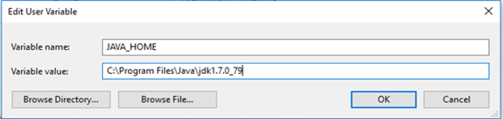
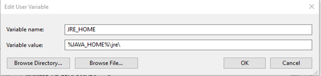
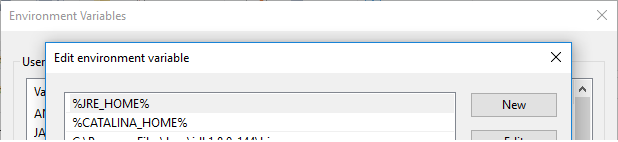
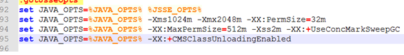
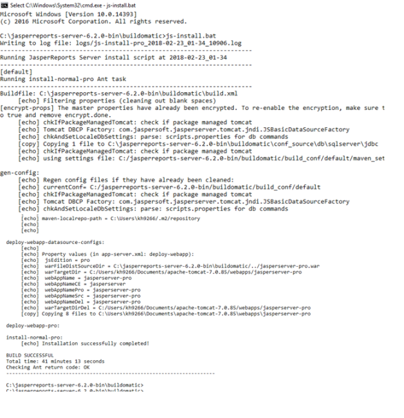
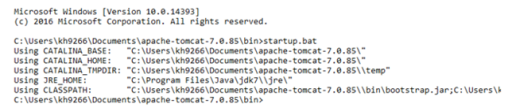

How to Install JasperReports Server WAR file using js-install Scripts
You are here: How to Install JasperReports Server WAR file using js-install Scripts
How to Install the JasperReports Server WAR file using js-install Scripts
The following section details how to install JasperReports® Server using the WAR file V6.2 distribution. The steps in this section provide you more details on js-install shell scripts supported on Windows and Linux operating systems.
Note: You can perform the following steps to install JasperReports Server WAR file using js-install Scripts for V 7.1 as well.
-
Install Apache Tomcat 7 application servers from the following link:
https://tomcat.apache.org/download-70.cgiNote: To install JasperReports Server V7.1, you must have Apache Tomcat 8.
-
Create a folder in
C:\Jaspersoft\jasperreports-server-6.2.0\ apache-tomcat -
Extract the content from the Tomcat zip into the folder you created in the previous step.
For example,C:\apache-tomcat-7.0.85-windows-x64.zip\apache-tomcat-7.0.85\toC:\Jaspersoft\jasperreports-server-6.2.0\apache-tomcat
-
Set the catalina home by using the following command:
Set "CATALINA_HOME=C:\Jaspersoft\jasperreports-server-6.2.0\apache-tomcat"

Note: In Linux, these variables will be set in bash profile and executed before going further.
-
Set the JRE home by using the following command:
set "JRE_HOME=<C:\Program Files\Java\jdk1.7.0_79\jre\"


Note: In Linux, these variables will be set in bash profile and executed before going further.
-
Add the
CATALINA_HOMEand theJRE_HOMEto the PATH variable.
-
Locate or install the SQL Server database.
Note: The target database can be on a remote server.
Note: The application server should reside on the local machine.
-
Extract all the files from the
jasperreports-server-6.2.0-bin.zip.- Navigate to the destination, for example,
C:\Jaspersofton Windows and/home/<user>on Linux.
The directory,jasperreports-server-6.2.0-bin, appears in the file location that you have chosen.
Note: The
refers to \jasperreports-server-6.2.0-bin. - Navigate to the destination, for example,
-
Copy the
<database name>_master.propertiesfile, specific to your database, from thesample_confand paste it to thebuildomaticfolder:- Copy from —
<js-install>/buildomatic/sample_conf/ -
Paste at —
<js-install>/buildomaticFor example, if your database is PostgreSQL, copy the
postgresql_master.propertiesto the<jsinstall>/buildomatic.
- Copy from —
-
Rename the file you copied to the
default_master.properties. -
Edit the
default_master.propertiesfile to add settings specific to for your database and application server.The following table details for db types and their respective sample property values:
Database Type Sample Property Values PostgreSQL appServerType=tomcat7 [tomcat6, tomcat8, jboss, jboss-eap-6, jboss-as-7, glassfish3, skipAppServerCheck] appServerDir=c:\\Program Files\\Apache Software Foundation\\Tomcat 7 dbHost=localhost dbUsername=postgres dbPassword=postgres MySQL appServerType=tomcat7 [tomcat6, tomcat8, jboss, jboss-eap-6, jboss-as-7, glassfish3, skipAppServerCheck] appServerDir=c:\\Program Files\\Apache Software Foundation\\Tomcat 7 dbUsername=root dbPassword=password dbHost=localhost Oracle 12c with CDB/PDB Use settings for Oracle, except for the following changes: dbUsername=c##jasperserver sid=cdb1 Other supported Oracle databases(including 12c non- CDB) appServerType=tomcat7 [tomcat6, tomcat8, jboss, jboss-eap-6, jboss-as-7, glassfish3, skipAppServerCheck] appServerDir=c:\\Program Files\\Apache Software Foundation\\Tomcat 7 dbUsername=jasperserver dbPassword=password sysUsername=system sysPassword=password dbHost=hostname DB2 appServerType=tomcat7 [tomcat6, tomcat8, jboss, jboss-eap-6, jboss-as-7, glassfish3, skipAppServerCheck appServerDir=c:\\Program Files\\Apache Software Foundation\\Tomcat 7 dbUsername=db2admin dbPassword=password dbHost=localhost SQL Server appServerType=tomcat7 [tomcat6, tomcat8, jboss, jboss-eap-6, jboss-as-7, glassfish3, skipAppServerCheck] appServerDir=c:\\Program Files\\Apache Software Foundation\\Tomcat 7 dbUsername=sa dbPassword=sa dbHost=localhost Note: When the appServerType property is set to skipAppServerCheck, the buildomatic skips all the application server validations.
The following are the limitations:
- You must add an extra \ (backslash) to paths in the .properties files, for example, appServerDir=C:\\Apache Software Foundation\\ apache-tomcat-7.0.85.
- The dbUsername must be the same as the username used in the Oracle DB. In addition, buildomatic will not work with the “sys as sysdba” syntax.
- For Oracle 12c without CDB/PDB, do not use the c##jasperserver dbUsername. Use the standard jasperserver dbUsername instead.
-
Update the encrypt property for password encryption.
The
default_master.propertiesfile has a property setting to enable encryption of passwords that reside on the file system. This applies to all the files found in the buildomatic folder, as well as the connection pooling file used by Apache Tomcat (context.xml). Currently, password encryption for connection pooling is supported only on the Tomcat application server.To enable encryption on the file system, un-comment the encrypt property so that it looks like this:
encrypt=true
-
Run the js-install Script in test mode.
-
To run the js-install script in test mode on Windows, follow these steps:
-
Navigate to the buildomatic directory:
cd <js-install>/buildomatic -
Enter the following command to run the js-install script in test mode:
js-install.bat test
-
-
To run the js-install script in test mode on Linux, follow these steps:
-
Navigate to the buildomatic directory:
cd <js-install>/buildomatic -
Enter the following command to run the js-install script in test mode:
./js-install.sh test
----------------------------------------------------------------------
Running JasperReports Server install script at 2018-02-23_12-31
----------------------------------------------------------------------
[test] Running pre-install-test-pro Ant task
----------------------------------------------------------------------
Buildfile: C:\Users\kh9266\Documents\jasperreports-server-6.2.0-bin\buildomatic\build.xml [echo] Filtering properties (cleaning out blank spaces)
-
-
-
Set Java JVM Options (required)
The following table details JVM options on Windows (64-bit):
JVM Options on Windows (64-bit) Options for all application servers set JAVA_OPTS=%JAVA_OPTS% -Xms1024m -Xmx2048m -XX:PermSize=32mset JAVA_OPTS=%JAVA_OPTS% -XX:MaxPermSize=512m -Xss2m -XX:+UseConcMarkSweepGCset JAVA_OPTS=%JAVA_OPTS% -XX:+CMSClassUnloadingEnabled For Oracle set JAVA_OPTS=%JAVA_OPTS% -DORACLE.JDBC.DEFAULTNCHAR=TRUE Additional options for JBoss set JAVA_OPTS=%JAVA_OPTS% -DJAVAX.XML.SOAP.MESSAGEFACTORY=ORG.APACHE.AXIS.SOAP.MESSAGEFACTORYIMPL set JAVA_OPTS=%JAVA_OPTS% -DJAVAX.XML.SOAP.SOAPCONNECTIONFACTORY=ORG.APACHE.AXIS.SOAP.SOAPCONNECTIONFACTORYIMPL set JAVA_OPTS=%JAVA_OPTS% -DJAVAX.XML.SOAP.SOAPFACTORY=ORG.APACHE.AXIS.SOAP.SOAPFACTORYIMPL Additional option for JBoss EAP6.0.1 set JAVA_OPTS=%JAVA_OPTS% -DJAVAX.XML.TRANSFORM.TRANSFORMERFACTORY=ORG.APACHE.XALAN.PROCESSOR.TRANSFORMERFACTORYIMPL Note: Add the JAVA_OPTS in
/bin/catalina.bat 
The following table details JVM options on Linux (64-bit):
JVM Options on Linux (64-bit) Additional options for all application servers EXPORT JAVA_OPTS="$JAVA_OPTS -XMS1024M -XMX2048M -XX:PERMSIZE=32M"EXPORT JAVA_OPTS="$JAVA_OPTS -XX:MAXPERMSIZE=512M -XSS2M"EXPORT JAVA_OPTS="$JAVA_OPTS -XX:+USECONCMARKSWEEPGC"EXPORT JAVA_OPTS="$JAVA_OPTS -XX:+CMSCLASSUNLOADINGENABLED" For Oracle export JAVA_OPTS="$JAVA_OPTS -Doracle.jdbc.defaultNChar=true" Additional options for JBoss export JAVA_OPTS="$JAVA_OPTS -Djavax.xml.soap.MessageFactory=org.apache.axis.soap.MessageFactoryImpl" export JAVA_OPTS="$JAVA_OPTS -Djavax.xml.soap.SOAPConnectionFactory=org.apache.axis.soap.SOAPConnectionFactoryImpl"export JAVA_OPTS="$JAVA_OPTS -Djavax.xml.soap.SOAPFactory=org.apache.axis.soap.SOAPFactoryImpl" Additional options for JBoss EAP 6.0.1 export JAVA_OPTS="$JAVA_OPTS -Djavax.xml.transform.TransformerFactory=org.apache.xalan.processor.TransformerFactoryImpl" -
Set up the license (required)
Replace the existing license file with the actual license file present in the following location:
OPERATING SYSTEMS Linux /home/<user>/Windows installed from WAR file C:\Users\<user>\Windows installed from binary installer C:\Users\Note: View the output logs at
<js-install>/buildomatic/logs/js-install-<date>.log -
Run the
js-installscripts:- Start your database server.
- Stop your application server.
- Open the Command Prompt as Administrator on Windows or open a terminal window on Linux.
- Type
cd <js-install>/buildomatic - Run the js-install script.
Description Commands Install the JasperReports Server, sample data, and sample databases (foodmart and suagrcrm) > js-install.bat(Windows)$ ./js-install.sh(Linux)Install the JasperReports Server, but not the sample data and sample databases > js-install.bat minimal(Windows)$ ./js-install.sh minimal(Linux)Note: Windows has a path length limitation of 260 characters.
Instead of installing JRS from
-
Start the server.
-
Use any of the following commands to start your application server and run the JasperReports Server:
-
Tomcat:
- Windows:
<tomcat>\bin\startup.bat - Linux:
<tomcat>/bin/startup.sh


- Windows:
-
-